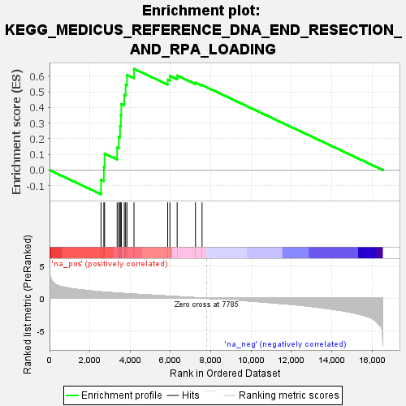
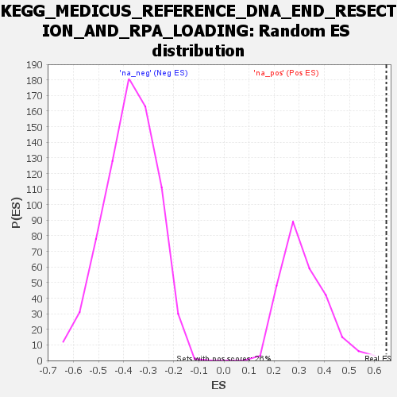

| | | Dataset | all_genes |
| Phenotype | NoPhenotypeAvailable |
| Upregulated in class | na_pos |
| GeneSet | KEGG_MEDICUS_REFERENCE_DNA_END_RESECTION_AND_RPA_LOADING |
| Enrichment Score (ES) | 0.64704543 |
| Normalized Enrichment Score (NES) | 2.0508993 |
| Nominal p-value | 0.0 |
| FDR q-value | 0.014796449 |
| FWER p-Value | 0.044 |
Table: GSEA Results Summary

Fig 1: Enrichment plot: KEGG_MEDICUS_REFERENCE_DNA_END_RESECTION_AND_RPA_LOADING
Profile of the Running ES Score & Positions of GeneSet Members on the Rank Ordered List
| SYMBOL | RANK IN GENE LIST | RANK METRIC SCORE | RUNNING ES | CORE ENRICHMENT | | 1 | RAD50 | 2555 | 0.994 | -0.0620 | Yes |
| 2 | BRCC3 | 2694 | 0.959 | 0.0191 | Yes |
| 3 | BLM | 2730 | 0.948 | 0.1054 | Yes |
| 4 | DNA2 | 3355 | 0.810 | 0.1432 | Yes |
| 5 | RPA3 | 3436 | 0.794 | 0.2124 | Yes |
| 6 | BRCA1 | 3498 | 0.782 | 0.2816 | Yes |
| 7 | RPA1 | 3537 | 0.776 | 0.3517 | Yes |
| 8 | BARD1 | 3561 | 0.770 | 0.4221 | Yes |
| 9 | RBBP8 | 3708 | 0.739 | 0.4821 | Yes |
| 10 | BABAM1 | 3773 | 0.725 | 0.5458 | Yes |
| 11 | WRN | 3841 | 0.708 | 0.6078 | Yes |
| 12 | NBN | 4189 | 0.646 | 0.6470 | Yes |
| 13 | RPA2 | 5862 | 0.344 | 0.5779 | No |
| 14 | BABAM2 | 5972 | 0.325 | 0.6016 | No |
| 15 | UIMC1 | 6331 | 0.256 | 0.6038 | No |
| 16 | ABRAXAS1 | 7240 | 0.103 | 0.5585 | No |
| 17 | MRE11 | 7565 | 0.044 | 0.5430 | No |
Table: GSEA details [plain text format]

Fig 2: KEGG_MEDICUS_REFERENCE_DNA_END_RESECTION_AND_RPA_LOADING: Random ES distribution
Gene set null distribution of ES for KEGG_MEDICUS_REFERENCE_DNA_END_RESECTION_AND_RPA_LOADING